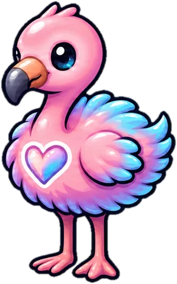

 Fire
Fire Light
LightTap a stage to read its story.
Pinklet is a fluffy pink chick with wide eyes and a heart-shaped pattern glowing on its downy chest, and tiny crystal-blue sparkles drift around its body. Its stubby wings flutter constantly, more out of excitement than any aerodynamic purpose, and its rounded beak is already warm to the touch. It hatched in the pink-crystal cavern shafts where light refracts into rosy columns, and it trots toward any glimmer it spots, convinced each one is a friend to meet.
Field note: Pinklet's tiny beak can heat a single crystal shard until it glows soft pink; miners sometimes carry one as a lantern.
Crystal Mines. Pinklet and its family are found in the Crystal Mines. See everyone who lives there.
Share a Bond Food that matches its types to become friends. Pinklet loves:
A Bond Food is not a trick. It joins your spirit with the Kimuro's spirit, and only when it chooses you.
Print the Kimuro adventure packs: mazes, cards, a board game and Bond Mark medals.
See the printable packs